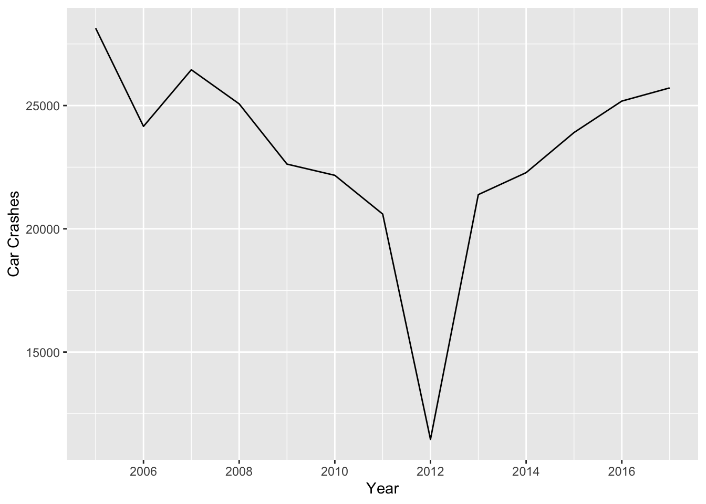

SPS 502 - Homework 1
Due by 11:59 p.m., Friday, September 29
Introduction
Welcome to your first homework assignment! We’re going to use local data to analyze a problem we discussed in our very first class: traffic accidents. You’ll use a variety of tools and techniques to analyze the data and generate visualizations and summary statistics that may help us better understand car accidents in Idaho.
Logistics and tips for success
This homework will require you to write some of your own code. Read these instructions carefully as you work through the homework assignment.
How to answer questions
Some questions will direct you to write code, while others will direct you to write a response. You’ll see TYPE YOUR ANSWER HERE in your RMarkdown file in places where you should write a response. And you’ll see code blocks with #Delete and enter your code where you should write your own code.
Copying/pasting and writing code
Copying and editing code from other answers or examples is a great way to both save time and learn. If you copy code over and something isn’t working, look carefully at the edits you made to see whether you missed something in the copying/pasting process. Also, be sure you’ve edited ALL the variable/object names appropriately so you’re accomplishing what the question is asking you to do. You should also make sure that you’re typing the variable and object names EXACTLY as they appear in the dataset or environment pane (spelling and case must match exactly).
If you’re stuck
If you get stuck, don’t panic! Before you ask for help, give yourself a few minutes to figure it out. Search ModernDive, look at your previous labs, and google your problem with “tidyverse”. Also, step away from your computer for a few minutes if you need a break. Finally (and this doesn’t have to be the last step), ask for help on Slack!
Setup
First, enter your name in the YAML header and rename your RMarkdown file.

Next, let’s load the packages we’ll need.
Load Packages
library(tidyverse)
library(lubridate)
library(scales)Import Data
Next, let’s load the data:
# Load raw data
idaho_crashes_raw <- read_csv("data/Crash_Data_2005__Present.csv")Rows: 299135 Columns: 9
── Column specification ────────────────────────────────────────────────────────
Delimiter: ","
chr (3): Severity, County, IntersectionRelated
dbl (5): OBJECTID, Mile_Point, Accident_Year, Number_Of_Fatalities, Number_...
dttm (1): Accident_Date_Time
ℹ Use `spec()` to retrieve the full column specification for this data.
ℹ Specify the column types or set `show_col_types = FALSE` to quiet this message.What do the data look like? Here are a few ways to view data in r
idaho_crashes_rawglimpse(idaho_crashes_raw)str(idaho_crashes_raw)Run the already provided code in your Rmarkdown file to get a sense of the dataset. More detail about these commands is available in ModernDive.
Exercises
Exploring the Data
Question 1
- What is another method you’ve used/learned to View a dataset? (HINT: The command is in the question).
Question 2
- What have we learned about the data? How many car accidents (observations/rows) do we have? How many variables (columns)? Type your answers in your RMarkdown sheet.
Clean the data
Okay, let’s clean up the raw data a little and get some useful information along the way. First, we’ll use the lubridate package to get useful information from the Accident_Date_Time variable, as well as rename a variable to make it easier to remember (we’ll cover more about the lubridate package in the future).
idaho_crashes_clean <- idaho_crashes_raw %>%
mutate(Hour= hour(Accident_Date_Time),
Month = month(Accident_Date_Time, label = TRUE, abbr = TRUE),
Day = wday(Accident_Date_Time, label = TRUE, abbr = TRUE)) %>%
rename(Year = Accident_Year)The lubridate package allowed us to extract useful information from the Accident_Date_Time variable.
Run the code below to learn more about the lubridate package:
?lubridateNow we have a “cleaned” version of the data stored in a dataframe called ‘idaho_crashes_clean’.
Let’s take another look at the data:
idaho_crashes_cleanQuestion 3
- What’s new in this dataset (
idaho_crashes_clean) compared to therawversion? Write your answer in your RMarkdown sheet.
Analysis
Accidents over time
Now that we have our data in shape, let’s see if we can gain any insights about car accidents in Idaho.
Question 4
4a. First, has the number of accidents increased since 2005?
Things to try:
Create a new dataframe that groups the number of accidents per year:
accidents_per_year <- idaho_crashes_clean %>%
count(Year)
#Print the result
accidents_per_year# A tibble: 13 × 2
Year n
<dbl> <int>
1 2005 28137
2 2006 24156
3 2007 26452
4 2008 25069
5 2009 22625
6 2010 22170
7 2011 20600
8 2012 11459
9 2013 21387
10 2014 22279
11 2015 23904
12 2016 25181
13 2017 25716Try adding , sort = TRUE in count() in the code above and run the command again in another code block. Copy the code and paste it into the code block provided in your RMarkdown file. Then edit the code accordingly and run it again.
4b. Why would you want to sort this list? Why would you not want to sort this list? Write your answer in your RMarkdown file.
Question 5
Next, let’s try a visualization:
ggplot(data = accidents_per_year,
mapping = aes(x = Year, y = n)) +
labs(y = "Car Crashes",
x = "Year") +
scale_x_continuous(breaks = pretty_breaks())+
geom_line()
- Notice anything strange? What’s going on in 2012? Which did you find more informative, the
tibble(table with the count of accidents) or the visualization? Write your answer in your RMarkdown file.
Accidents by month
Question 6
- Which is the most dangerous month? Let’s create a new dataframe that groups accidents by month then create a line graph to visualize the data. Try writing the code yourself this time. (HINT: the code is nearly identical to the three codeblocks above).
Accidents by time of day
Let’s see what the worst time of day is for accidents.
We have the hour of the crash recorded in the variable Hour, which lists the hour from 0 to 23.
idaho_crashes_clean %>%
count(Hour, sort = TRUE)# A tibble: 24 × 2
Hour n
<int> <int>
1 17 25822
2 16 24816
3 15 24368
4 12 19454
5 14 19305
6 18 18277
7 13 18230
8 11 15617
9 7 15519
10 8 14967
# ℹ 14 more rowsQuestion 7
- Which are the top 3 worst hours for car accidents? What time of day is this? Type your answer in the RMarkdown file.
Accidents by county
Question 8
8a. Which is the most dangerous county? Run the code below to find out!
accidents_by_county <- idaho_crashes_clean %>%
count(County, sort = TRUE)
#Print the result
accidents_by_county8b. Are you surprised? Why or why not?
8c. This may not be the best measure to determine which is the most dangerous county. Why? What might be a better measure? Do we need additional data?
Fatal Accidents
The dataset has information on whether accidents are fatal recorded in the variable, Number_Of_Fatalities. Let’s focus on those and see if the trends are any different.
There are a number of ways to do this, but let’s keep it simple for now and use the subset function to create a new dataframe which only includes fatal accidents (i.e. observations where number of fatalities is greater than zero).
idaho_fatal_crashes <- subset(idaho_crashes_clean, subset = Number_Of_Fatalities > 0)
#Print the result
idaho_fatal_crashesAlright. A much smaller dataset. Let’s dig in a bit.
Question 9
First, let’s see if the most dangerous counties are also the deadliest. You’ll need to write this code yourself.
9a. Create a new dataframe that counts the number of fatal crashes per county and print the result.
9b. Next, create a visualization showing fatal crashes by county. Enter your code in the codeblocks provided in the RMarkdown file.
9c. What are the similarities and differences between this and the original county list? Type your answer in the RMarkdown file.
Hint: The code will be very, very similar to the code in Question 8 (in codeblock count-county) and the code in Question 5 (in codeblock count-year-viz). You will just need to figure out which inputs to replace so that you’re using the right data.
Question 10
Now let’s look at fatal accidents by month.
10a. Create a new dataframe counting fatal accidents by month.
10b. Next, create a linegraph to visualize the data.
Based on your tables and visualizations, how do fatal accidents by month differ from total accidents by month? What might explain the differences? Provide your code and your written answer in your RMarkdown file.
Wrap-up and submission
We’re going to KNIT a bit differently than we do for the labs. First, make sure you rename your RMarkdown folder before you knit (adding your last name and first name). Next, knit the document and instead of an html file, you’ll get a pdf. Save the pdf to your computer (just as you do with the .html files in the labs) and upload to Canvas under “Homework 1”.